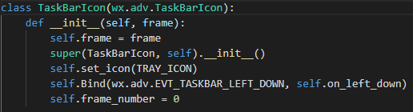

that we coded previously as part of the constructor
that we coded previously as part of the constructorOften, when making an application, it is useful to be able to relegate it to the system tray so that it isn't cluttering your screen when it's not being used, but is still ready when you need it. In this tutorial, I will demonstrate how to create a basic system tray icon that you can use to easily control your application. This could be used in a small application that you want to run in the background without cluttering the screen, or to have your application open when the computer boots up, and put itself in the system tray so that it can monitor the system. If you follow along with the steps given, you will have a small system tray icon that reveals and hides a blank window, which you can then modify to control your application. We'll create two main classes, one that creates a window, one that creates the system tray application that controls that window. We'll design a menu that the user can interact with, and handle the events returned by that menu. Let's get started.
For this guide, we will be using the WxPython library. It can easily be installed through typing the following pip command into a cmd window: "pip install wx"
You will then need to import the modules shown below:
In previous versions of WxPython, all of the functions required for this tutorial were included in the Wx module, but to decrease unnecessary imports, Wx modules that are less frequently used have been moved to the wx.adv module. We will need some of the functionality of wx.adv to interact with the system tray, so we install both modules.
At this point, we will define the tooltip for the system tray application, as well as the icon you wish to use. The tooltip is what will appear when the user hovers over your icon. Fill in the following with the values you require:
As its own website puts it: "wxPython is a cross-platform GUI toolkit for the Python programming language. It allows Python programmers to create programs with a robust, highly functional graphical user interface, simply and easily."
WxPython is a python library for creating GUIs. It runs on any platform, which is useful because it prevents you from having to rewrite code for different platforms. Part of the reason that this tutorial is using WxPython is because it uses native Windows elements wherever possible, making our job easier, as it simplifies the code that we have to write, as Windows handles the complexity of interacting with the system tray.
In this step, we will define the class that will be used to create our system tray object. The class definition and constructor are defined as below:

Let's walk through walk this section is doing, step by step:
As we are defining a class to create and manipulate system tray objects, we will need the functionality of the wx.adv.TaskBarIcon, and so here we tell the program that this is a subclass of wx.adv.TaskBarIcon.
Here, we assign the frame that the TaskBarIcon will display when the maximise button(which we will look at later on) is pressed. Initially, this will be a null reference, as we create a frame when maximise is pressed for the first time, as we will see later on. (A frame in WxPython is the same as a window in most other libraries and languages) As this is a subclass, we must call the constructor of the superclass using the super().__init__() function.
This line looks for a valid image at the path we specified in step 1, to use as an icon for the taskbar object. We will define the set_icon method later on in the program.
This line binds the on_left_down function(we will define this later), to the event that occurs when the TaskBar Icon is left clicked.
"This attribute will be used to keep track of the number of open windows". We will use this to determine whether the program should create a new window, or reveal and existing one when the maximise menu option is selected.
In this step, we will program the method of the TaskBarIcon class that creates the popup menu. This is the menu that appears when you right-click the system tray icon. The code for this is shown below:
This method creates the menu, and then populates it with options that trigger the methods we will need. Again, we will step through this in sections:
This line creates our menu object.
This populates the menu with an option labelled “Maximise”, and sets it to trigger the “self.on_hello()” method when clicked. The on_hello() method reveals our window to the user. This function, “create_menu_item()” will be defined later on in the program
This places a separating line in the menu, to make it more asthetically pleasing, and to reduce misclicks by moving our options away from each other.
In this step, we will define the on_min() method. This will be called when the user clicks minimise on the menu that we defined in the last step. The code is as follows:
All this method does is hide the frame(window) that the system tray object will control.
We will now define the set_icon() method, which is responsible for finding and setting the icon that the System Tray object is to use.
Here, we have passed the path to the image of the icon that we wish to use. The icon is found by passing the path to the wx.Icon method. We then call wx’s SetIcon method, which sets our image as the icon.
To further demonstrate how events from the System Tray object can be bound to functions, we will now create the method called by that we coded previously as part of the constructor
The code for this demo function is below:
The next method we will program is the on_hello() method, which we bound to the Maximise menu option in Step 3:
When actually programming a System Tray object, you do not need the print statement, it just makes debugging easier in this example, as it allows us to see whether the method is called when we click the menu item. You can also change the title variable to suit you, it is the title of the frame(window) that this method creates.
Here, we check whether any frames have already been created. If so, we don’t need to create a new frame, and so we just call the .Show() method of the frame that has already been created. If we have not created any frames, we will need to create a frame and assign it to our System Tray object. We do this by creating an object of the OtherFrame class, which we will program after we have finished creating our TaskBarIcon class. We then up the frame_number to 1, so that the next time we run this method, it won’t create a new frame, but will instead use the one we just created.
We will now create the final method of this first class, which we will call on_exit(). This method is called by the Exit menu option. The code is below:
The wx.CallAfter() method waits for all pending events to finish, to ensure that everything that the program was told to do has been done. We have passed self.Destroy() as the function to be executed once all pending events are complete. There are two ways to terminate the System Tray object, self.Close() and self.Destroy(), but self.Close() can sometimes not fully terminate everything that it is supposed to, which could leave hanging code behind after the program is supposed to be finished. We call self.Destroy() instead, which does not have this issue. After this, we destroy the frame, which ends the program.
Now that we have defined the entirety of our TaskBarIcon class, we will program the create_menu_item() function that we called in step 3. This function should be placed outside of the class definition(An example placement can be seen here). The code for this is below:
This function adds an option to a menu by taking whatever label and function we pass to it, and creating an option with that label and function in the menu that we pass to it.
In this line, we create the MenuItem(the option we wish to put in the menu). We pass it three arguments. The first, menu, is the menu object we want to create an option for. The second is the ID that can be used to refer to our option. We have assigned the item with the ID -1. When this ID is passed to wx, it finds a free ID that is not being used by Windows, and assigns it to our item. This saves us the hassle of trying to find out which IDs are currently free. The third option, label, is the text that will be on the option.
This binds the method that we pass to this function to the EVT_MENU event. The EVT_MENU event is triggered when the user right-clicks on the TaskBar Icon. This means that when the Icon is right-clicked, this menu option is shown to the user. The “id=item.GetId()” argument makes sure that our menu option is linked to the event trigger.
These lines append the menu option to the menu, and then return it.
We will now define the class OtherFrame(), which is the frame that we control using the System Tray object. The code is below:

In this class, we create a constructor and call its superclass's constructor. We then call the .Show() method of the frame, revealing it to the user.
The final class that we have to create is the App class, which is a subclass of wx.App. This class is required to initialise wxPython. The code is below:
This class contains a constructor. You may notice that this constructor is called OnInit(), rather than the standard way of creating a python constructor, __init__(). This is because wx has to perform tasks in the background to set itself up, and calling the OnInit() constructor allows it to do this.
This line creates the frame that the TaskBarIcon will exist within. Passing None to it tells wx that the frame has no parent window.
This sets the frame as the top window, which means it is used as the parent of dialogs that do not have an explicit parent window. This isn't particularly applicable to this example, but is including for completeness.
In this step, we create the function that executes the program when it is called. It only takes 2 lines to do so, as follows:
Passing False to the App class tells the class not to redirect STERR and STDOUT, which means that you will still see error messages and your print statements in the console.
The final step in this tutorial is to call our main function. The code to do this is below:
The line “if __name__ == ‘__main__’: will be true when this program is being run directly, rather than being imported as a library. This means that when you execute this program, it will start and create the System Tray application. If it is imported, it will not, allowing you to make use of the methods we have defined in whatever way you need to.
In this tutorial, we have defined a class for our system tray app. We have given it a menu, and bound methods to the menu items to control the visibility of a blank window(which you can customise to suit your application).
If the steps have been followed correctly, you should now have a functioning System Tray Application. For reference, the entire program is below:
import wx.adv
import wx
TRAY_TOOLTIP = 'Name'
TRAY_ICON = 'icon.png'
def create_menu_item(menu, label, func):
item = wx.MenuItem(menu, -1, label)
menu.Bind(wx.EVT_MENU, func, id=item.GetId())
menu.Append(item)
return item
class OtherFrame(wx.Frame): # This class inherits from the wx.Frame class
def __init__(self, title, parent=None):
wx.Frame.__init__(self, parent=parent, title=title)
self.Show()
class TaskBarIcon(wx.adv.TaskBarIcon):
def __init__(self, frame):
self.frame = frame
super(TaskBarIcon, self).__init__()
self.set_icon(TRAY_ICON)
self.Bind(wx.adv.EVT_TASKBAR_LEFT_DOWN, self.on_left_down)
self.frame_number = 0
def CreatePopupMenu(self):
menu = wx.Menu()
create_menu_item(menu, 'Maximise', self.on_hello)
menu.AppendSeparator()
create_menu_item(menu, 'Minimise', self.on_min)
menu.AppendSeparator()
create_menu_item(menu, 'Exit', self.on_exit)
return menu
def on_min(self, event):
self.frame.Show(False)
def set_icon(self, path):
icon = wx.Icon(path)
self.SetIcon(icon, TRAY_TOOLTIP)
def on_left_down(self, event):
print ('Tray icon was left-clicked.')
def on_hello(self, event):
print ('Hello, world!')
title = "2nd"
if self.frame_number == 0:
self.frame = OtherFrame(title=title)
self.frame_number = 1
else:
self.frame.Show(True)
def on_exit(self, event):
wx.CallAfter(self.Destroy)
self.frame.Destroy()
class App(wx.App):
def OnInit(self):
frame=wx.Frame(None)
self.SetTopWindow(frame)
TaskBarIcon(frame)
return True
def main():
app = App(False)
app.MainLoop()
if __name__ == '__main__':
main()
Sources:
https://stackoverflow.com/questions/6389580/quick-and-easy-trayicon-with-python?rq=1
https://wxpython.org/Phoenix/docs/html/index.html
https://stackoverflow.com/questions/21018324/oninit-and-init-in-wxpython
https://zetcode.com/wxpython/firststeps/